土壤三相關係的換算式，課本上列了一大串：孔隙比、孔隙率、飽和度、含水量，再加上四種單位重。硬背很容易背錯。這支影片換個方法：只記三個定義，其他全部從一張圖讀出來。
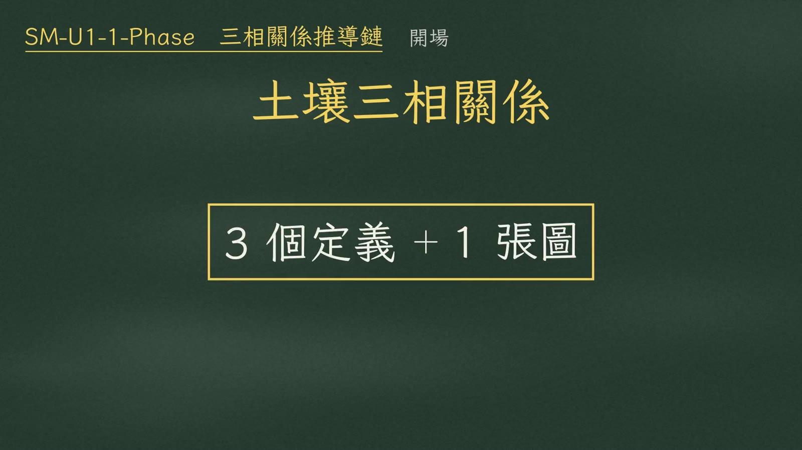
整條路線分四步：
| 步驟 | 內容 |
|---|---|
| ① 物理定義 | 寫下三個物理定義 |
| ② 令 \(V_s=1\) | 令土粒體積 \(V_s=1\)，當作錨點 |
| ③ 填滿六格 | 把三相圖的六格填滿 |
| ④ 讀出公式 | 從圖上讀出所有公式 |
最後再教一個交卷前十秒的驗算。
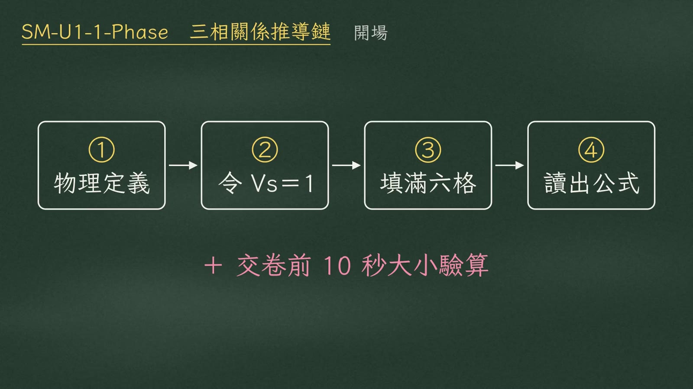
黑板配色：紫＝孔隙、土色＝土粒、藍＝水；公式中同色對應。
第一個定義，孔隙比 \(e\)，等於孔隙體積 \(V_v\) 除以土粒體積 \(V_s\)：
$$e=\frac{\color{#7b5fb0}V_v}{\color{#8a6d45}V_s}$$第二個，飽和度 \(S\)，等於水的體積 \(V_w\) 除以孔隙體積 \(V_v\)，也就是孔隙裡有幾成裝了水。乾土是 0，完全飽和是 1。
$$S=\frac{\color{#2c7fa8}V_w}{\color{#7b5fb0}V_v},\qquad 0\le S\le 1$$第三個，含水量 \(w\)，等於水重 \(W_w\) 除以土粒乾重 \(W_s\)。它是唯一的重量比，在實驗室秤一次濕重、烘乾再秤一次就能得到。
$$w=\frac{W_w}{W_s}$$| 定義 | 式子 | 世界 |
|---|---|---|
| 孔隙比 | \(e=V_v/V_s\) | 體積 |
| 飽和度 | \(S=V_w/V_v\) | 體積 |
| 含水量 | \(w=W_w/W_s\) | 重量 |
所以三個定義裡，兩個在體積世界，一個在重量世界。
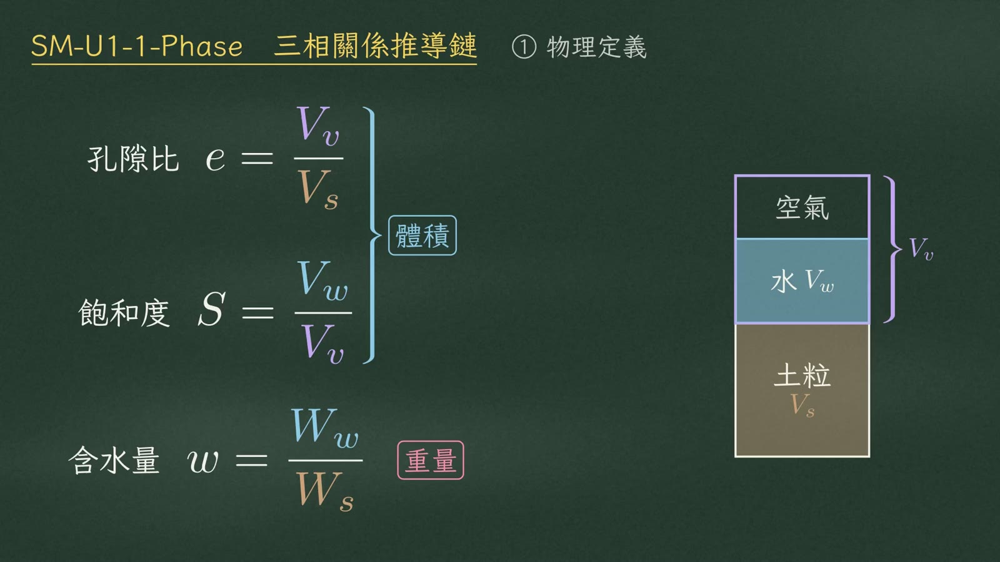
土粒體積不管壓密、夯實還是搬運都守恆，所以就令它等於一。
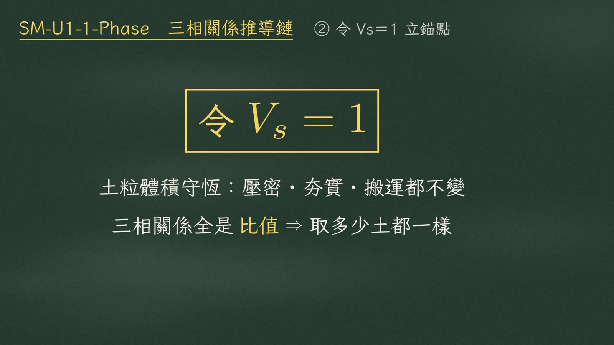
先填左邊的體積軸：\(V_s=1\)；由孔隙比的定義，孔隙 \(V_v=e\)；由飽和度，水的體積 \(V_w=Se\)；剩下的空氣是 \(e-Se\)；總體積是 \(1+e\)。
再填右邊的重量軸，這裡借土粒比重 \(G_s\) 當橋樑：土粒重等於體積 1，乘 \(G_s\)，再乘 \(\gamma_w\)，也就是 \(G_s\gamma_w\)。水重是 \(Se\gamma_w\)，空氣的重量忽略。總重就是 \((G_s+Se)\gamma_w\)。
| 相 | 體積 | 重量 |
|---|---|---|
| 空氣 | \(e-Se\) | \(0\) |
| 水 | \(Se\) | \(Se\gamma_w\) |
| 土粒 | \(1\) | \(G_s\gamma_w\) |
| 合計 | \(V=1+e\) | \(W=(G_s+Se)\gamma_w\) |
黑板右上角的橋樑：\(G_s=\dfrac{W_s}{V_s\gamma_w}\)。
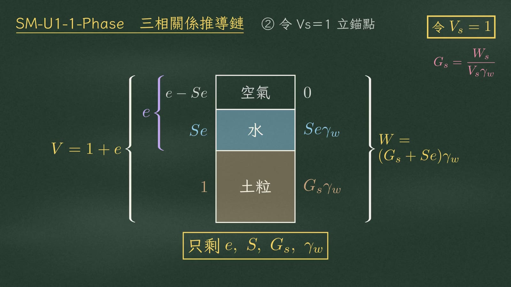
第一條，把重量代進含水量的定義，\(\gamma_w\) 上下約掉，移項：
$$w=\frac{W_w}{W_s}=\frac{Se\,\cancel{\gamma_w}}{G_s\,\cancel{\gamma_w}}\quad\Longrightarrow\quad \boxed{Se=wG_s}$$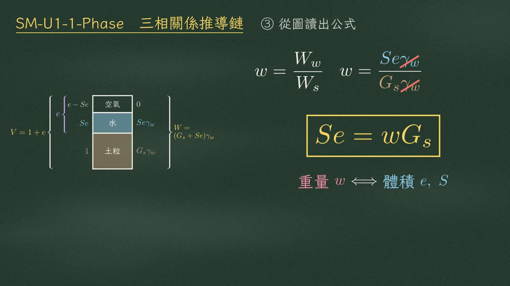
第二條，孔隙率 \(n\) 等於孔隙除以總體積。圖上孔隙是 \(e\)，總體積是 \(1+e\)：
$$n=\frac{V_v}{V}=\frac{e}{1+e}\qquad\Longleftrightarrow\qquad e=\frac{n}{1-n}$$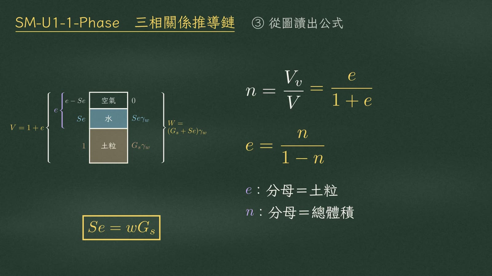
第三組是單位重，定義永遠是總重除以總體積。圖上總重是 \((G_s+Se)\gamma_w\)，總體積是 \(1+e\)，這就是濕單位重 \(\gamma_t\) 的母式：
$$\gamma=\frac{W}{V}\qquad \boxed{\gamma_t=\frac{(G_s+Se)\gamma_w}{1+e}}$$其他三個，都是這條母式的特例。
乾單位重：孔隙裡沒有水，\(S=0\)，分子的 \(Se\) 消失。另外，總重本來就是土粒重乘上 \(1+w\)，所以 \(\gamma_d\) 也等於 \(\gamma_t\) 除以 \(1+w\)：
$$\gamma_d=\frac{G_s\gamma_w}{1+e}=\frac{\gamma_t}{1+w}\qquad\bigl(W=W_s(1+w)\bigr)$$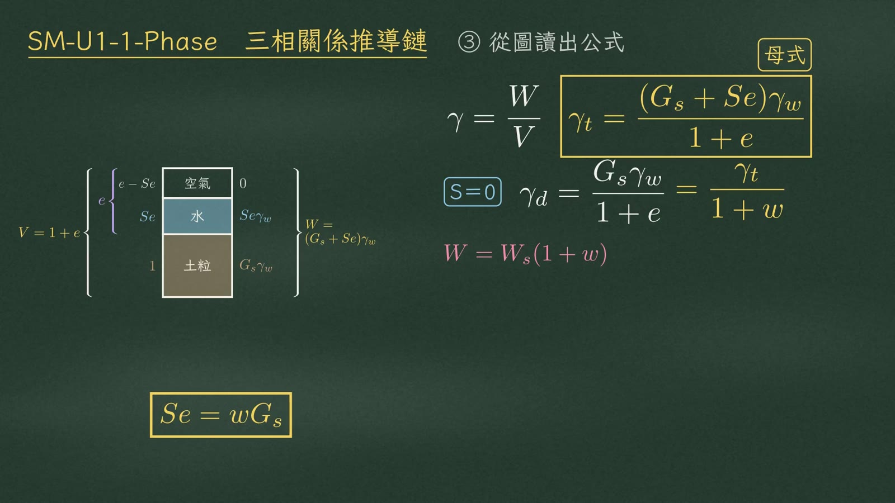
飽和單位重：孔隙灌滿水，\(S=1\)，分子變成 \(G_s+e\)。浮單位重 \(\gamma'\)，是水位以下扣掉浮力，也就是飽和單位重減 \(\gamma_w\)；通分之後，分子剛好變成 \(G_s-1\)。
$$\gamma_{sat}=\frac{(G_s+e)\gamma_w}{1+e}\qquad \gamma'=\gamma_{sat}-\gamma_w=\frac{(G_s-1)\gamma_w}{1+e}$$| 單位重 | 條件 | 公式 |
|---|---|---|
| \(\gamma_t\)（母式） | 一般 | \(\dfrac{(G_s+Se)\gamma_w}{1+e}\) |
| \(\gamma_d\) | \(S=0\) | \(\dfrac{G_s\gamma_w}{1+e}=\dfrac{\gamma_t}{1+w}\) |
| \(\gamma_{sat}\) | \(S=1\) | \(\dfrac{(G_s+e)\gamma_w}{1+e}\) |
| \(\gamma'\) | 扣浮力 | \(\gamma_{sat}-\gamma_w=\dfrac{(G_s-1)\gamma_w}{1+e}\) |
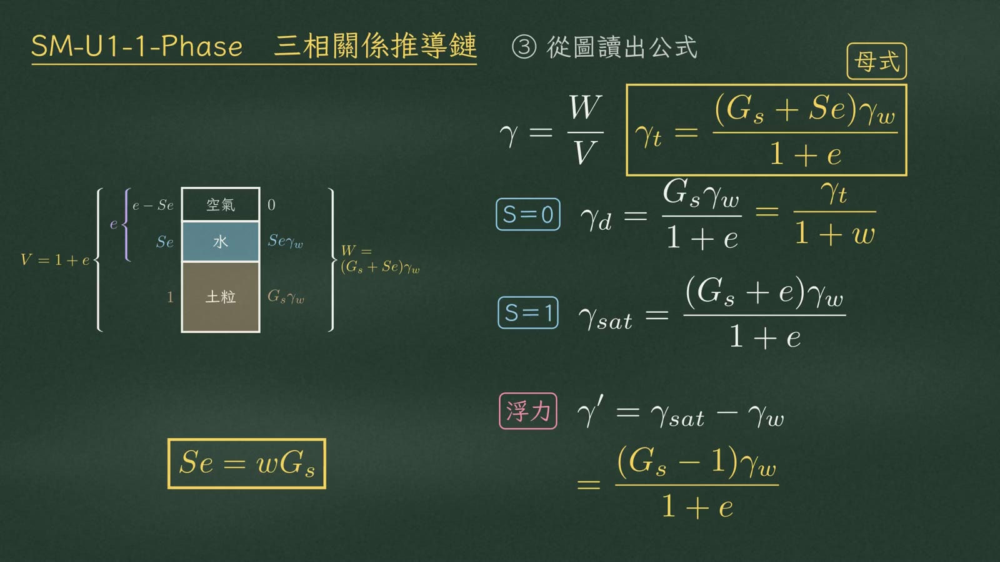
拿 \(G_s=2.7\)、\(e=0.8\)、\(S=0.5\) 來試（單位 kN/m³）：
| \(\gamma'\) | \(\gamma_d\) | \(\gamma_t\) | \(\gamma_{sat}\) | \(G_s\gamma_w\) |
|---|---|---|---|---|
| 9.27 | 14.72 | 16.90 | 19.08 | 26.49 |
都小於 26.49。
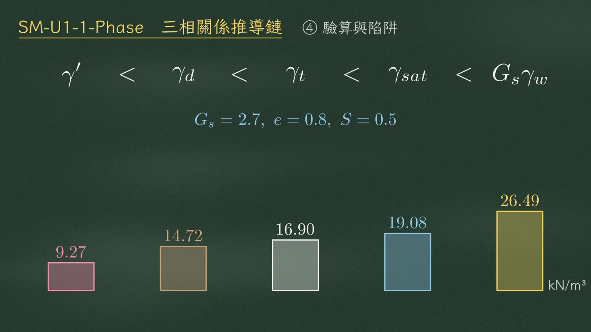
這個順序從圖上就看得出來（各項分子皆 \(\times\gamma_w\)，分母皆為 \(1+e\)）：
| 單位重 | \(\gamma'\) | \(\gamma_d\) | \(\gamma_t\) | \(\gamma_{sat}\) | \(G_s\gamma_w\) |
|---|---|---|---|---|---|
| 分子 | \(G_s-1\) | \(G_s\) | \(G_s+Se\) | \(G_s+e\) | \(G_s\)（不除） |
浮單位重的分子是 \(G_s-1\)，比乾的 \(G_s\) 少；濕的分子多了 \(Se\)；\(S=1\) 時最大。嚴格說，\(S=0\) 或 \(1\) 時會取等號：
$$S=0\Rightarrow\gamma_d=\gamma_t,\qquad S=1\Rightarrow\gamma_t=\gamma_{sat}$$而 \(G_s>1\)，土粒比水重，所以 \(\dfrac{G_s+e}{1+e}\lt G_s\)，飽和單位重追不上 \(G_s\gamma_w\)。
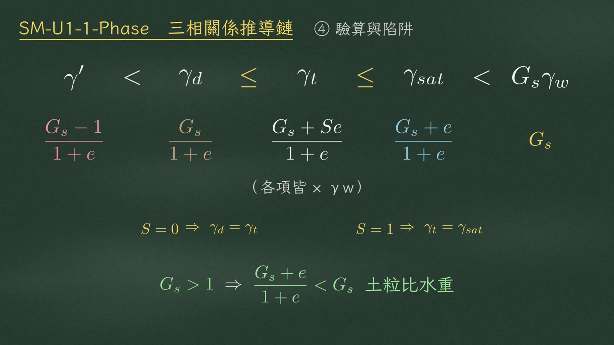
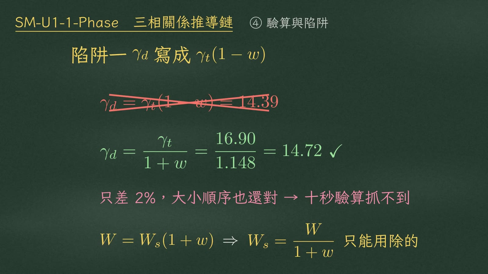
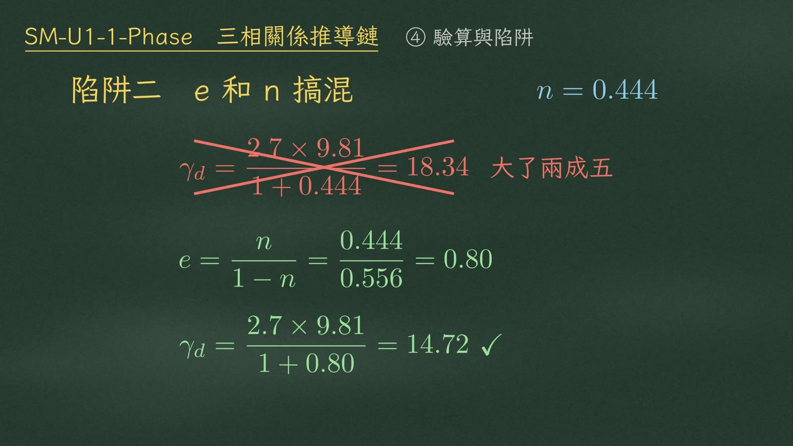
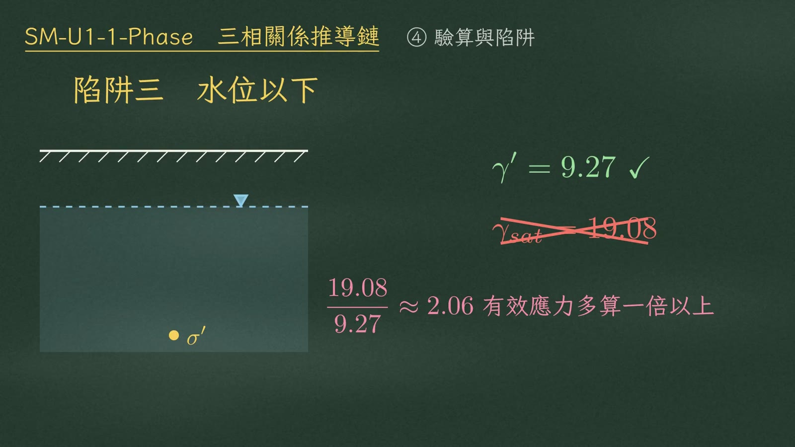
下一支影片，就用這條推導鏈來解 SM-2016-2 的借土場計算。
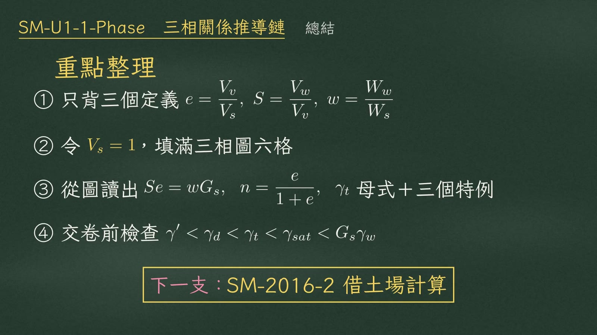